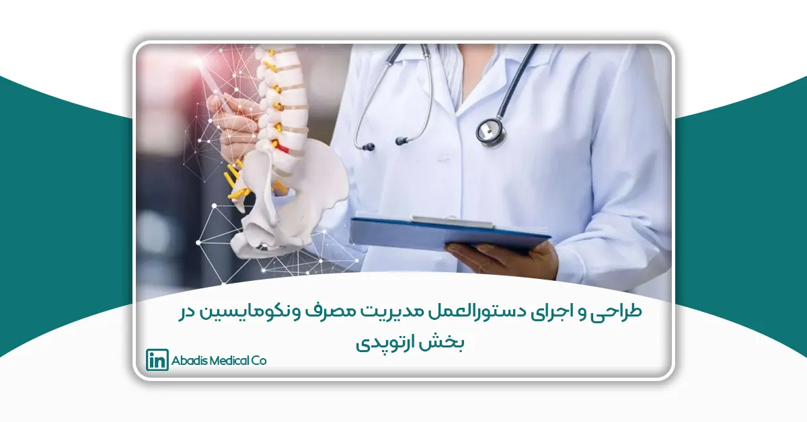

این مقاله توسط سرکارخانم رویا توکلی کرمانی و راضیه غفوری نوشته شده؛ و برای یازدهمین کنگره کنترل عفونت ارسال شده است.
خلاصه
مقدمه
مقاومت ضد میکروبی (AMR) در قرن بیست و یکم به یک اورژانس جهانی تبدیل شده است.سازمان جهانی بهداشت AMR (WHO) را به عنوان یکی از ده چالش جهانی بهداشت عمومی که بشریت با آن مواجه است به رسمیت شناخته است و افزایش پاتوژن های مقاوم به دارو را در درجه اول به سوء استفاده و استفاده بیش از حد از داروهای ضد میکروبی نسبت می دهد. مصرف بی رویه آنتی بیوتیک ها یکی از چالش های اساسی در این زمینه است. یکی از راهکارها مدیریت مصرف آنتی بیوتیک ها طبق دستورالعمل میباشد. لذا این مطالعه با هدف مدیریت مصرف ونکومایسین در بخش ارتوپدی انجام شده است.
روش
مطالعه حاضر به روش اقدام پژوهی انجام شد. در فاز اول مقدار مصرف ماهیانه بخش مشخص شد .سپس در تحلیل اولیه با شرکت ذینفعان انجام شد. سپس با مرور متون و پنل متخصصین (ارتوپدی، عفونی و فارماکولوژی) راهنمای مصرف ونکومایسین در بیماران ارتوپدی تدوین شد. راهنمای مصرف به دستیاران و پزشکان بخش ارتوپدی آموزش داده شد و ونکومایسین طبق دستورالعمل جهت بیماران نسخه می شد. پس از سه ماه از اجرای دستورالعمل، مصرف ونکومایسین در بخش ارتوپدی ارزیابی و مقایسه شد.
یافته ها
در فصل بهار ۱۴۰۲ تعداد ونکومایسین نسخه شده ۲۷۷۲ ویال برای ۱۸۸ نفر از بیماران بستری، و در فصل تابستان ۱۴۰۲ تعداد ونکومایسین نسخه شده ۲۱۶۸ ویال برای ۱۳۹ نفر از بیماران بستری ، تجویز گردید .نتایج حاکی از کاهش مقدار مصرف ونکومایسین در بخش ارتوپدی می باشد. بروز عفونت بعد از جراحی در زمان اجرای برنامه مدیریت مصرف ونکومایسین به صورت ماهیانه بررسی شد و تفاوت معنی دار در بروز عفونت بعد از جراحی مشاهده نشد(۰.۰۵<P).
نتیجه
نتایج پژوهش نشان می دهد که دستورالعمل تدوین شده جهت مدیریت مصرف ونکومایسین و اجرای آن می تواند در مدیریت مصرف ونکومایسین موثر بود و مصرف ونکومایسین را در بخش ارتوپدی کاهش دهد. با توجه به اینکه مقاومت ضد میکروبی (AMR) در حال افزایش است لذا توصیه می شود که مدیریت مصرف آنتی بیوتیک ها در سایر بخش ها نیز انجام شود.
کلمات کلیدی: مقاومت آنی بیوتیکی، ونکومایسین، ارتوپدی.
مقدمه
عفونتهای بیمارستانی و مقاومت ضد میکروبی (AMR) یکی از چالش های اصلی در سراسر جهاناست. در سال ۲۰۱۹، ۴.۹۵ میلیون مرگ در سراسر جهان با مقاومت باکتریایی مرتبط بوده است. مقاومت ضد میکروبی (AMR) در قرن بیست و یکم به یک اورژانس بهداشتی حیاتی جهانی تبدیل شده است. سازمان جهانی بهداشتAMR (WHO) را به عنوان یکی از ده چالش جهانی بهداشت عمومی که بشریت با آن مواجه است به رسمیت شناخته است و افزایش پاتوژن های مقاوم به دارو را در درجه اول به سوء استفاده و استفاده بیش از حد از داروهای ضد میکروبی نسبت میدهد.
مقاومت ضد میکروبی(AMR) در حال حاضر یکی از نگرانی های اصلی برای سلامت انسان است. به دلیل افزایش سریع و انتشار جهانی، چندین عفونت میکروبی رایج ممکن است در دهههای آینده غیرقابل درمان شوند و استفاده از سایر درمانهای نجاتدهنده مانند پیوند یا شیمیدرمانی را غیرممکن میسازد. عفونتها از عوارض مکرر بستری شدن در بیمارستان هستند. عفونتهای بیمارستانی یا عفونتهای مرتبط با مراقبتهای بهداشتی یا عفونتهای اکتسابی بیمارستانی، عفونتهای درونزا یا برونزا هستند که بیمار در طول بستری شدن یا بلافاصله پس از ترخیص از بیمارستان به آن مبتلا میشود.
عفونت های بیمارستانی عوارض جانبی شدیدی دارند. منجر به استرس عاطفی، ناتوانی عملکردی و حتی مرگ در موارد خاص می شود. مرگ و میر ناشی از عفونت های بیمارستانی در هند بیشتر از هر نوع مرگ تصادفی دیگری است. همچنین مدت اقامت در بیمارستان را طولانی می کند و بر بار اقتصادی مدیریت بیماری زمینه ای می افزاید. همکاری فعال کارکنان بهداشت و درمان برای اجرای بهتر اقدامات پیشگیرانه و کنترلی موجود در کنار پیشرفت های فنی، کمک زیادی به مبارزه با عفونت های بیمارستانی خواهد کرد. عفونت های اکتسابی بیمارستانی(HAIs) منجر به افزایش مدت بستری در بیمارستان، استفاده نامناسب از آنتی بیوتیک های وسیع الطیف و مقاومت چندگانه آنتی بیوتیکی میشود.
مصرف بی رویه آنتی بیوتیکها یکی از چالشهای اساسی در این زمینه است. یکی از راهکارها مدیریت مصرف آنتی بیوتیک ها طبق دستورالعمل می باشد. این مطالعه با هدف مدیریت مصرف ونکومایسین در بخش ارتوپدی انجام شده است.
روش
مطالعه حاضر به روش اقدام پژوهی انجام شد.با هدف ارتقا ایمنی در بخش گوارش انجام شد. مشارکتکنندگان پرستاران و پزشکان بیمارستان آیت الله طالقانی تهران در سال ۱۴۰۲ بودند. دادهها با استفاده از پرسشنامه (ابزارهای پژوهشگر ساخته اقدامات ایمن، ابزار تبعیت از درمان،فرم ارزیابی اثربخشی آموزش بیمار و ابزار چک لیست مبتنی بر شواهد دارودهی) و مصاحبه گردآوری شد. تحلیل دادههای بخش کمی با استفاده از SPSS 20 و بخش کیفی به روش تحلیل محتوا با نرم افزار MAX Q Data انجام شد.
در فاز اول مقدار مصرف ماهیانه بخش مشخص شد. سپس در تحلیل اولیه با شرکت دینفعان انجام شد .سپس با مرور متون و پنل متخصصین (ارتوپدی، عفونی و فارماکولوژی) راهنمای مصرف ونکومایسین در بیماران ارتوپدی تدوین شد. راهنمای مصرف به دستیاران و پزشکان بخش ارتوپدی آموزش داده شد و ونکومایسین طبق دستورالعمل جهت بیماران نسخه می شد. پس از سه ماه از اجرای دستورالعمل، مصرف ونکومایسین در بخش ارتوپدی ارزیابی و مقایسه شد. مشارکت کنندگان پرستاران و پزشکان شاغل در بیمارستان آیت الله طالقانی تهران در سال ۱۴۰۲ بودند. داده ها با استفاده از مصاحبه گردآوری شد.
Study design and Setting
در پژوهش حاضر یک چرخه اقدام پژوهش انجام شد و شامل ۴ مرحله برنامه ریزی، اجرا، مشاهده و انعکاس بود. طی مرحله اول اقدام پژوهی (برنامه ریزی) میزان مصرف ونکومایسین بررسی شد. در مرحله دوم چرخه (مرحله اجرا) مرور متون و پنل متخصصین (ارتوپدی، عفونی و فارماکولوژی) راهنمای مصرف ونکومایسین در بیماران ارتوپدی تدوین شد. راهنمای مصرف به دستیاران و پزشکان بخش ارتوپدی آموزش داده شد و ونکومایسین طبق دستورالعمل جهت بیماران نسخه می شد در مرحله سوم چرخه (مشاهده) اثربخشی دستورالعمل به صورت ماهیانه مورد ارزیابی قرار گرفت. مصاحبه های گروهی متمرکز (و در صورت نیاز مصاحبه های فردی) با مشارکت کنندگان، در مورد اثربخشی برنامه، روند مداخلات، نقاط ضعف و قوت برنامه، مسائل و مشکلات اجرای برنامه انجام شد. در مرحله چهارم چرخه (انعکاس) پس از سه ماه از اجرای دستورالعمل، مصرف ونکومایسین در بخش ارتوپدی ارزیابی و با قبل از شروع اجرای دستورالعمل مقایسه شد.
در زمان اجرای برنامه به صورت ماهیانه بروز عفونت بعد از جراحی بررسی و مقایسه شد.
Study Participants and Sampling
در پژوهش حاضر ،مشارکت کنندگان پرستاران و پزشکان شاغل در بیمارستان آیت الله طالقانی در سال ۱۴۰۲ بودند.
Data Analysis
جهت تحلیل داده های حاصل از پرسشنامه از آمار توصیفی و تحلیلی و نرم افزار SPSS نسخه ۲۰ وبرای تحلیل داده های حاصل از مصاحبه از روش تحلیل محتوای کیفی با استفاده نرم افزار MAX Q Data انجام شد.
یافته ها
در فصل بهار ۱۴۰۲ تعداد ونکومایسین نسخه شده ۲۷۷۲ ویال برای ۱۸۸ نفر از بیماران بستری، به تفکیک در ماه فروردین ۷۲۶ ویال ونکومایسین نسخه شده برای ۵۲ نفر از بیماران بستری – در ماه اردیبهشت ۱۲۱۱ ویال ونکومایسین نسخه شده برای ۷۵ نفر از بیماران بستری – در ماه خرداد ۸۳۵ ویال ونکومایسین نسخه شده برای ۶۱ نفر از بیماران بستری تجویز گردید. در فصل تابستان ۱۴۰۲ تعداد ونکومایسین نسخه شده ۲۱۸۶ ویال برای ۱۳۹ نفر از بیماران بستری ، به تفکیک در ماه تیر ۱۰۰۰ ویال برای ۷۵ نفر از بیماران بستری – در ماه مرداد ۸۷۹ ویال برای ۴۵ نفر از بیماران بستری و در ماه شهریور ۳۰۷ ویال برای ۱۹ نفر از بیماران بستری تجویز گردید. نتایج حاکی از کاهش مقدار مصرف ونکومایسین در بخش ارتوپدی می باشد. بروز عفونت بعد از جراحی در زمان اجرای برنامه مدیریت مصرف ونکومایسین به صورت ماهیانه بررسی شد و تفاوت معنی دار در بروز عفونت بعدازجراحی مشاهده نشد(۰.۰۵<P).
بحث
پژوهش حاضر با هدف مدیریت مصرف ونکومایسین انجام شد بود. یافته های پژوهش حاکی از این بود که دستورالعمل تدوین شده در کاهش مصرف و مدیریت صحیح نسخه نویسی ونکومایسین موثر می باشد.
مقاومت ضد میکروبی(AMR) یک مسئله جهانی بوده است. در سال ۲۰۱۹، ۴.۵ میلیون مرگ در سراسر جهان با مقاومت باکتریایی مرتبط بوده است. مقاومت ضد میکروبی (AMR) در قرن بیست و یکم به یک اورژانس بهداشتی حیاتی جهانی تبدیل شده است. سازمان جهانی بهداشت AMR (WHO) را به عنوان یکی از ده چالش جهانی بهداشت عمومی که بشریت با آن مواجه است به رسمیت شناخته است و افزایش پاتوژن های مقاوم به دارو را در درجه اول به سوء استفاده و استفاده بیش از حد از داروهای ضد میکروبی نسبت می دهد. مقاومت ضد میکروبی (AMR) در حال حاضر یکی از نگرانی بهای اصلی برای سلامت انسان است. به دلیل افزایش سریع و انتشار جهانی، چندین عفونت میکروبی رایج ممکن است در دهههای آینده غیرقابل درمان شوند و استفاده از سایر درمانهای نجاتدهنده مانند پیوند یا شیمیدرمانی را غیرممکن میسازد.
شایع ترین علت HAI عفونت محل جراحی (۳۰٪) و سپس عفونت دستگاه ادراری (٪۲۲) عفونت دستگاه تنفسی تحتانی (۱۵٪) و عفونت جریان خون (۱۳٪) است. شیوع عفونت های بیمارستانی در بخش های مراقبت ویژه (۲۵٪) نسبت به بخش های پزشکی (٪۹) و جراحی (۱۲٪) زیاد است. شایع ترین سویههای پاتوژن در مجموعههای مراقبتهای بهداشتی گزارش شده، باسیل های گرم منفی هستند. همچنین ارتباط معنی داری بین سن، لوله گذاری و تراکئوستومی با میزان HAIs گزارش شده است.
بر اساس پایش ملی عفونت های بیمارستانی (NNIS) که از ۴۴ دانشگاه علوم پزشکی ایران در سال ۱۳۹۰ گزارش شده است، از ۵۲۴۹۸۷۷ بیمار بستری در بیمارستان به ازای ۳۸۶۰۴ بیمار، NI رخ داده است (میانگین میزان بروز: ۰.۷۴ درصد، محدوده از ۰.۰۵ درصد در زابل تا ۲.۶۶ درصد در تهران). ۵۴.۶ درصد از آنها مرد بودند.
عفونت های بیمارستانی اغلب با برخی یا سایر اقدامات حمایتی تهاجمی مانند کاتتر داخل وریدی مرکزی (CVC)، کاتترهای دستگاه ادراری و ونتیلاتورهای مکانیکی همراه هستند. سوابق نشان داده است که نود و یک درصد از عفونتهای خونی در بیماران با کاتترداخل وریدی مرکزی (CVC) ، نود و پنج درصد موارد پنومونی در بیماران تحت تهویه مکانیکی و هفتاد و هفت درصد عفونتهای دستگاه ادراری در بیماران با کاتتر مجاری ادراری بوده است.
برای کاهش HAI ها، اجرای سیاستها و مداخلات مناسب، آموزش کارکنان در مورد استفاده از دستگاهها و تهیه و بهروزرسانی پروتکلها و دستورالعملها برای بهبود کیفیت مراقبت توصیه می شود. همچنین باید آموزش کافی در مورد علل و عوارض بیماری به کارکنان بیمارستان داده شود.
عدم رعایت دستورالعملهای بهداشت دست همچنان یک چالش جهانی است. به منظور استفاده کارآمد از منابع و به حداکثر رساندن مزایای سلامتی، تحقیقات مداوم در ارزیابی اقتصادی کنترل عفونت باید برای حمایت از تصمیمات سیاست مراقبت بهداشتی مبتنی بر شواهد انجام شود. بنابراین توسعه برنامههای کنترل عفونت در مراکز مراقبتهای بهداشتی برای جلوگیری از عفونتهای بیمارستانی (HAI) ضروری است.
نتیجه گیری
نتایج پژوهش نشان میدهد که تدوین دستورالعمل مصرف ونکومایسین و اجرای آن میتواند در مدیریت مصرف آن موثر باشد و مصرف ونکومایسین را کاهش دهد. با توجه به اینکه مقاومت ضد میکروبی (AMR) در حال افزایش است لذا توصیه می شود که مدیریت مصرف آنتی بیوتیکها در سایر بخشها نیز انجام شود.
محدودیت های پژوهش
یکی از محدودیت های پژوهش مقاومت در برابر مدیریت مصرف به علت نگرانی از بروز عفونت بعد از جراحی بود که با پایش دقیق علائم عفونت در شرکت کنندگان و مقایسه بروز مرتفع گردید. محدودیت دیگری که در فرایند پژوهش اختلال ایجاد کند و قابل کنترل نباشد وجود نداشت.
ملاحظات اخلاقی
در این مطالعه از کلیه مشارکت کنندگان رضایتنامه آگاهانه کتبی پس از توضیح اهداف اخذ شد و شرکت کنندگان جهت شرکت و یا ادامه فرایند پژوهش آزاد بودند.این پژوهش تأییدیه کمیته اخلاقی از کمیته اخلاق دانشکده پرستاری و مامایی و داروسازی دانشگاه علوم پزشکی شهید بهشتی دارد.
دسترسی داده ها
دادههای ایجادشده در مطالعه فعلی در صورت درخواست معقول از پدیدآور رابط ارائه میگردد.
حمایت کنندگان مالی
این پژوهش حمایت کننده مالی نداشت.
تعارض منافع
نویسندگان این مطالعه هیچ گونه تضاد منافع نداشتند.
تقدیر و تشکر
نویسندگان از کلیه شرکت کنندگان و همچنین مسئولین و کارکنان مرکز آموزشی درمانی آیت الله طالقانی کمال تشکر و قدردانی را داریم.
منابع
- Liu, X., et al., The direct medical economic burden of healthcare-associated infections and antimicrobial resistance: A preliminary study in a teaching hospital of Nepal. Journal of Global Antimicrobial Resistance, 2022. 29: p. 299-303.
- Freitas, A.R .and G. Werner, Nosocomial pathogens and antimicrobial resistance: modern challenges and future opportunities. 2023, MDPI. p. 1685.
- Caselli, E., et al., An innovative strategy for the effective reduction of MDR pathogens from the nosocomial environment. Advances in Microbiology, Infectious Diseases and Public Health: Volume 13, 2019: p. 79-91.
- Saba, N. and W.K. Balwan, Study of Frequency, Epidemiology of Nosocomial Infections in Healthcare Centres. Saudi J Pathol Microbiol, 2023. 8(7): p. 160-166.
- Izadi, N., et al., Rate of the incidence of hospital-acquired infections in Iran based on the data of the national nosocomial infections surveillance. New Microbes and New Infections, 2020. 38: p. 100768.
- Sharif, I., et al., Gaps in knowledge and practices regarding nosocomial infections among nursing staff of a tertiary care hospital of Rawalpindi. Pakistan Armed Forces Medical Journal, 2019(6): p. 1210.
- Khazaei, S., S. Khazaei, and E. Ayubi, Importance of prevention and control of nosocomial infections in Iran. Iranian journal of public health, 2018. 47(2): p. 307-308.
- Nimer, N.A., Nosocomial infection and antibiotic-resistant threat in the Middle East. Infection and drug resistance, 2022: p. 631-639.
- von Lengerke, T., et al., Impact of psychologically tailored hand hygiene interventions on nosocomial infections with multidrug-resistant organisms: results of the clusterrandomized controlled trial PSYGIENE. Antimicrobial Resistance & Infection Control, 2019. 8: p. 1-11.
- Nguemeleu, E.T ,.et al., Economic analysis of healthcare-associated infection prevention and control interventions in medical and surgical units: systematic review using a discounting approach. Journal of Hospital Infection, 2020. 106(1): p. 134-154.